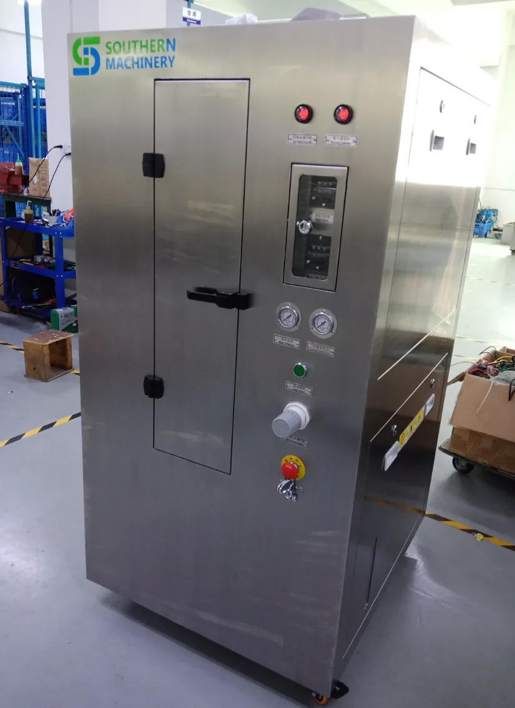
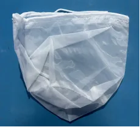
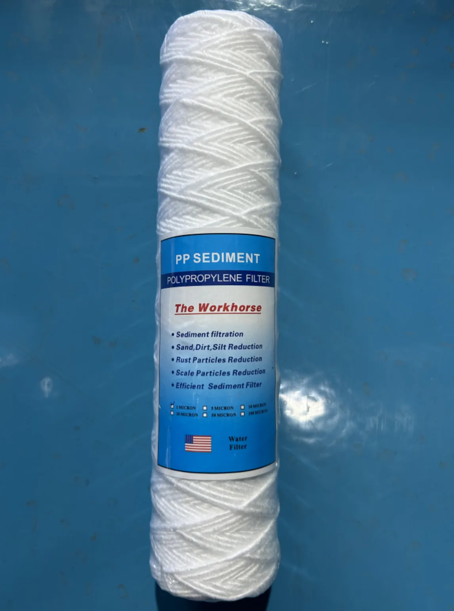
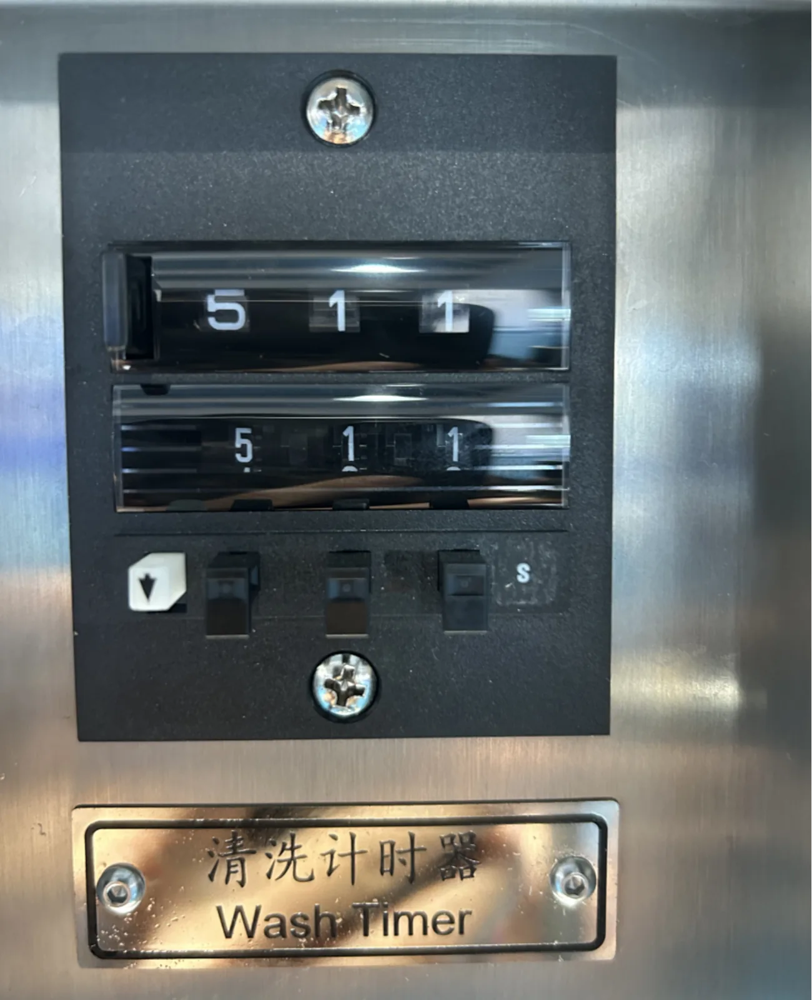

Manual cleaning can introduce variation
- Inconsistent coverage across fine areas of a stencil
- Uncertain wash and dry timing from one shift to another
- More direct handling around cleaning liquid and residue
SMT Stencil Cleaning Solution
All-pneumatic stencil cleaning with 360° double-sided rotary spray, compressed-air drying and filtered liquid circulation—built for repeatable SMT stencil maintenance.

Purpose-built for SMT
The S-1688 is an all-pneumatic stencil cleaning platform for electronics manufacturing teams that need to clean solder paste stencils, screens and related red-glue process tooling between production runs. Its cleaning and drying stages are designed as one enclosed, timed workflow.
Discuss your stencil construction, soil type and cleaning chemistry with Southern Machinery before final configuration and operating setup.
Why automatic stencil cleaning
Manual methods can be useful for small tasks, but they rely on operator technique and can make timing, coverage and solvent handling harder to standardize.
Machine capabilities
Features below describe the available machine architecture. Final process settings, cleaning liquid and operating procedures should be confirmed for the application.
Cleaning and drying actions are driven by compressed air, with mechanical/pneumatic time control.
Double-sided rotary nozzles direct cleaning liquid across both sides of the loaded stencil.
Compressed-air blow drying follows the wash stage in the enclosed chamber.
Filtered cleaning liquid is circulated in a closed-loop process rather than used as a one-pass flow.
Mesh, filter bag and fine filter element stages address different residue sizes in the liquid path.
Documented stainless-steel construction is used for key liquid-contact machine components.
Operators can set cleaning pressure according to the approved process requirement.
A pneumatic safety interlock component supports controlled access to the cleaning chamber.
How it works
The normal workflow moves from loading through wash, dry and removal. Verify timing and cleaning-liquid selection with the final operating procedure.
Place a compatible stencil in the chamber fixture.
Close the chamber before starting the timed sequence.
Rotary nozzles spray cleaning liquid on both sides.
Compressed air blows the stencil dry after cleaning.
Open after the cycle and complete the approved inspection.
Working principle
Compressed air drives the pneumatic diaphragm pump and supports the wash and drying cycle. Cleaning liquid travels through the filtration path and rotary spray system, then returns for recirculation. Air drying is completed with a separate compressed-air blow stage.
This diagram is a functional overview, not a piping and instrumentation drawing.
Dedicated filtration system
Filtration is specified as part of the machine process. Service intervals depend on actual residue loading, cleaning liquid and use frequency.

Specified to protect the pump from larger debris in the liquid path.
Specified for filtration of solid particles collected during cleaning.

Specified for fine filtration of solder-paste or red-glue residue.
Cleaning and drying
The current S-1688 specification lists a 2–5 minute clean time and 2–5 minute dry time for solder paste stencils.

Simple operating process
Confirm the installation, compressed-air supply and cleaning-liquid condition before use.
Place the compatible stencil in the chamber and secure it as instructed.
Use timings approved for the stencil, residue and cleaning-liquid process.
Close the door and start the machine according to the operating manual.
Remove only after the cycle, inspect the stencil and service filters when required.
Machine videos
Video players are loaded only after you select a video, helping the page remain quick to open.
View the S-1688 machine in operation on YouTube.
Review another machine view before requesting details.
Use the final video to compare working views.
Technical specifications
These figures follow the latest supplied S-1688 specification sheet. Confirm process-specific options before purchase.
| Model | S-1688 |
|---|---|
| Product | Pneumatic stencil cleaning machine |
| Maximum stencil size | 750 mm (L) × 750 mm (W) × 40 mm (H) |
| Liquid tank capacity | 40 L (max.) |
| Wash method | 360° double-sided rotary nozzles liquid spray wash |
| Dry method | 360° double-sided rotary nozzles compressed-air blow dry |
| Clean time | 2–5 min (solder paste stencil) |
| Dry time | 2–5 min (solder paste stencil) |
| Filtration | 1 mm filter mesh for pump protection; 20 μm filter bag for solid particles; 1 μm filter element for solder paste or red glue |
| Air supply | 0.5–0.7 MPa |
| Air consumption | 400–600 L/min |
| Net weight | 230 kg |
| Air outlet size | Φ120 × H30 mm |
| Machine size | 800 mm (L) × 950 mm (W) × 1630 mm (H) |
Spare parts & maintenance
The parts below are shown to support identification and maintenance planning. Availability, service intervals and compatibility should be confirmed against the final machine configuration. Select any image to enlarge it.
Installation basics
Use these as planning points only. Follow the final installation and operating manual, local requirements and your cleaning-liquid safety documentation.
Provide clean, dry compressed air within the specified 0.5–0.7 MPa supply range.
Plan the specified machine exhaust connection and a suitable venting arrangement for the process area.
Install on a flat, dry, clean surface with adequate working clearance around the cabinet.
Use a ventilated area and maintain sufficient space for loading, maintenance and safe access.
FAQ
For any point that changes with cleaning liquid, stencil type or local installation rules, ask Southern Machinery to review the application.
The current supplied specification lists 750 mm (L) × 750 mm (W) × 40 mm (H) as the maximum stencil size.
The cleaning and drying cycle is all pneumatic and driven by compressed air. Confirm all final site installation and grounding requirements from the supplied manual and your local safety rules.
For a solder paste stencil, the stated clean time is 2–5 minutes and the stated dry time is 2–5 minutes. Actual settings should match the approved process.
The current specification lists a 1 mm mesh filter for pump protection, a 20 μm filter bag for solid particles and a 1 μm filter element for solder-paste or red-glue residue.
Cleaning-liquid compatibility is process-specific. Select a suitable liquid and verify its material compatibility, ventilation needs and safety documentation before operation.
The machine requires 0.5–0.7 MPa compressed air and lists air consumption of 400–600 L/min.
Common serviceable components shown on this page include filters, seals, timer, pneumatic valves, gauges, a diaphragm pump, filter bag, ceramic bearing and start valve. Confirm the exact part against your machine configuration.
Downloads
Open the supplied product documents to review the original technical and operating material. Where figures differ, use the current specification section on this page for public product data.
Request a technical discussion
Send your application details and Southern Machinery can help review a suitable S-1688 cleaning setup.